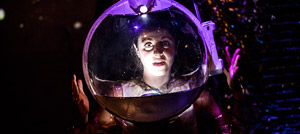
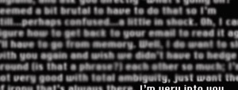
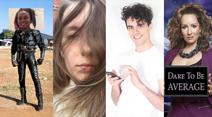
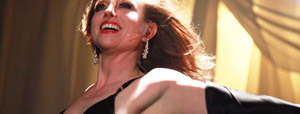

|
Special Effects Festival
January 6, 7, 15
Artist driven and oriented, Special Effects gathers experimental performance works by practitioners exploring contemporary issues. Drawing on a network of over 7,000 artists who are part of www.contemporaryperformance.com, the festival samples the diversity and richness of the discipline of performance and presents an open forum for critical thinking on the issues of the day.
What’s YOUR Problem? // A Deep Space Lounge Act
Created by Lisa Clair Group
January 6 @ 8PM
LISA CLAIR’S MAGNETIC, UNEXPECTED, INTERGALACTIC TAKE ON CABARET SERVES UP GLITTER AND GLAM IN THE FACE OF BODILY DISASTER!
Medical trauma gets the ol’ glitter-and-glam, smokey lounge, old-time treatment in this neo-cabaret with original music. A lounge singer determined to transform personal disaster blends medical experiences, bodily invasion and pop culture depictions of our universe into a deep space musical extravaganza.
I’m Very Into You
by Kathy Acker and McKenzie Wark
adapted and directed by Sara Lyons
January 7 @ 2PM
Tickets are FREE
Queer sex, power, and Portishead. In 1995, legendary punk feminist author Kathy Acker met Australian media theorist McKenzie Wark in Sydney, Australia and the two fell into a fast and furious love affair, lasting just a few days before Acker returned home to San Francisco. I’m Very Into You is the email correspondence that followed, two weeks of fevered writing on sex, self, and society between two brilliant queer minds at the dawn of the digital age.
“Why am I telling you all this? Partly ‘cause the whole queerness/identity thing for me stretches through everything, absolutely everything. Slipping between straight/gay is child’s play compared to slipping between writer/teacher/influence-peddler whatever. I forget who I am. You reminded me of who I prefer to be.”
Gray Spaces
Jordan Martin, Jaime Allyce Wright, Joe Castle Baker, and Jill Pangallo
January 7 @ 8PM
An evening of new works and works-in-progress from the Contemporary Performance network revealing radical experiments in performance. From young makers breaking into and out of the performance scene, this evening event brings together vital forces that are shaping the next frontier of performativity. Existing between the black box of experimental theatre and the white rooms of the art museum, gray spaces explore the marginal zones of performance.
Lemonade
Created by Heather Litteer
January 15 @ 2PM
“Small town girl” comes to the Big Apple to become an actress. She worked her way up the ladder, playing hookers, junkies, and strippers. You know, the parts that most actresses are afraid to play. Then came the role of a lifetime…
Heather Litteer’s gripping, funny, heartfelt solo show explores how women are treated both onscreen and off. Her adventures as an actress and NYC downtown darling are mixed with calls back home to her ill but steel magnolia of a mother, whose southern roots are so strong they can suffocate. Navigating the absurd misogyny of our media verse and the choices you make can follow you around for life.
Lemonade turns female exploitation on its head, and offers redemption to any woman who has even been typecast. Heather Litteer and La MaMa ETC are participants in the Fox Foundation Resident Actor Fellowships , funded by the William & Eva Foundation and administered by The Theatre Communications Group.
|